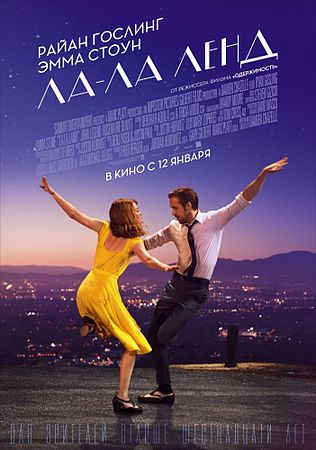
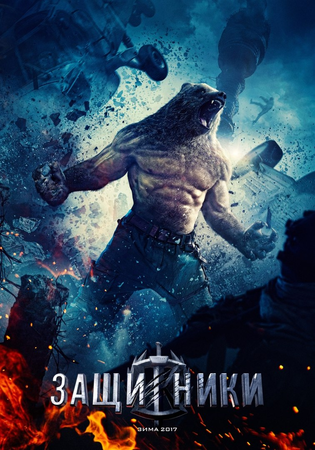
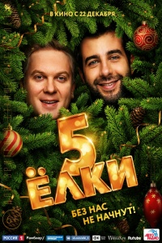
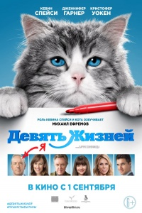
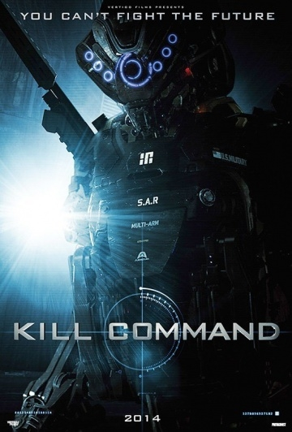
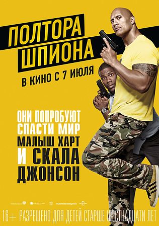
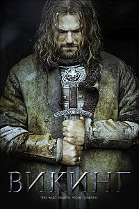

Фильмы 2017 года.
«Ла-Ла Ленд» (англ. La La Land) — американский трагикомедийный фильм-мюзикл, снятый Демиеном Шазеллом. Мировая премьера ленты состоялась 31 августа 2016 года на Венецианском международном кинофестивале. Фильм рассказывает о джазовом пианисте, который влюбляется в молодую актрису в Лос-Анджелесе.
«Защитники» — предстоящий российский фильм о супергероях. Сюжет фильма рассказывает про советских супергероев по аналогии с американскими комиксами о Лиге справедливости и Мстителях. Съемки начались 27 апреля 2015 года, а выход картины намечен на 23 февраля 2017 года.
«Ёлки 5» — Новогодняя кинокомедия Тимура Бекмамбетова. Продолжение фильмов Ёлки, Ёлки 2, Ёлки 3 (спин-офф Ёлки лохматые) и Ёлки 1914. Фильм вышел 22 декабря 2016 года.
«Девять жизней» (англ. Nine Lives) — фантастический рассказ американской писательницы Урсулы Ле Гуин, написанный в 1969 году. Входит в сборник «Двенадцать румбов ветра», отмеченный премией Локус в 1976-м году. В произведении поднимаются сложные этические проблемы, связанные с клонированием людей, отношением клонов с другими людьми и друг с другом, в частности, вопрос бисексуальности. На русском языке рассказ переиздавался в различных сборниках 13 раз, суммарным тиражом более 2100 тыс. экземпляров.
Недалекое будущее. Экспериментальный отряд специальных агентов высаживается на необитаемом острове для прохождения интенсивных боевых учений. Но на острове высадился кто-то еще. И это — не люди.
«Полтора шпиона» (англ. Central Intelligence) — американский комедийный фильм 2016 года режиссёра Роусона Маршалла Тербера. Авторами сценария стали Айк Баринхолц, Дэвид Стассен и Роусон Маршалл Тербер. В главных ролях — Дуэйн Джонсон и Кевин Харт. Премьера в США состоялась 17 июня 2016 года. В России фильм вышел в прокат 7 июля.
Капризный и чрезмерно амбициозный пианист Анди и живущий каждым днём Бенно схожи только в одном: они оба скоро умрут. Не желая оставаться в хосписе, перед смертью они решают пережить лучший день своей жизни. Обманным путём получив деньги в банке, они отправляются в путешествие в Африку. Для обоих больных поездка становится настоящим вызовом, а одному из них предстоит впервые столкнуться со своим прошлым. Хотя путешествие и хранит в себе опасности, через ряд забавных и трагических моментов герои достигают своей цели: переживают лучший день своей жизни, а главное осознают — человек сам пишет историю своей жизни.
«Викинг» — предстоящий российский историко-художественный кинофильм режиссёра Андрея Кравчука, повествующий о приходе к власти князя Владимира Святославича. Сюжет фильма следует истории князя Владимира. Она начинается с момента его бегства в Новгород и заканчивается Крещением Руси. Премьера фильма в России запланирована на 22 декабря 2017 года.
